{kind=link}

This document presents some quirks in μL in the book of Job.
The header of each entry below takes the following form:
| proposed consensus |
# c:v | how proposed differs from consensus |
Where:
| וַיִפֹּ֥ל וַיִּפֹּ֥ל |
# 1:19 | yod lacks דגש in μL, says DM but not BHQ |
A דגש may be hiding high up on the yod and touching it. — U — M — μL 397A col. 3 line 21
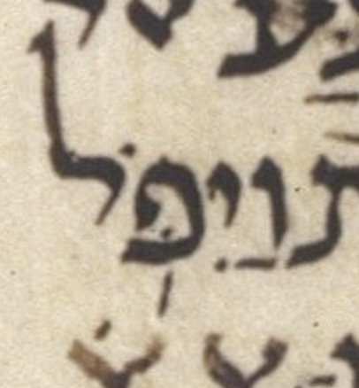
μA (Aleppo) (page 270v, col 1, line 9, word 2):
| שָׁ֔מָה שָׁ֔מָּה |
# 1:21 | מ lacks דגש in μL, says BHQ’s reiteration |
BHQ notes this quirk. As usual, it does so by noting that μA and μY agree, and μL disagrees with them. I.e. μA=μY=x, μL=w, and w≠x. So what we boldly call the consensus, BHQ merely calls the matching contents of μA and μY. — U — M — μL 397B col. 1 line 1
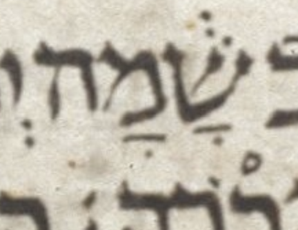
μA (Aleppo) (page 270v, col 1, line 13, word 3):

| י֖וֹם י֭וֹם |
# 3:3 | טרחא not דחי in μL, says BHQ but not WLC |
U — M — μL 397B col. 2 line 12

μA (Aleppo) (page 270v, col 2, line 23, word 2):

| מִמָּ֑עַל מִמַּ֑עַל |
# 3:4 | מ has קמץ not פתח in μL, says BHQ’s implication |
U — M — μL 397B col. 2 line 14
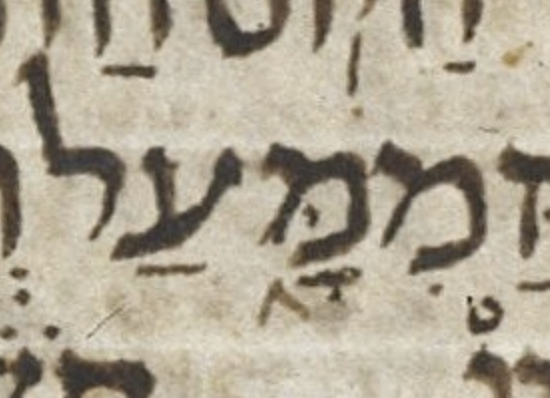
μA (Aleppo) (page 270v, col 2, line 25, word 1):

| א֚וֹ א֤וֹ |
# 3:16 | יתיב not מהפך in μL, says BHQ but not WLC |
The יתיב accent doesn’t make sense here because this is in the poetic rather than prose section of Job (3:2 – 42:6). — I don’t think BHQ is really proposing that μL has יתיב here. This is more likely a typo (inherited from BHS) than a deliberate choice. — U — M — μL 398A col. 1 line 3
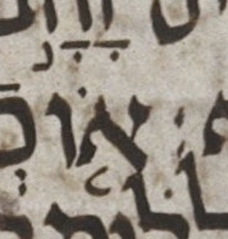
μA (Aleppo) (page 271r, col 1, line 11, word 1):

| כּ֖וֹשֵׁל כּ֭וֹשֵׁל |
# 4:4 | טרחא not דחי in μL, says BHQ but not WLC |
U — M — μL 398A col. 1 line 20
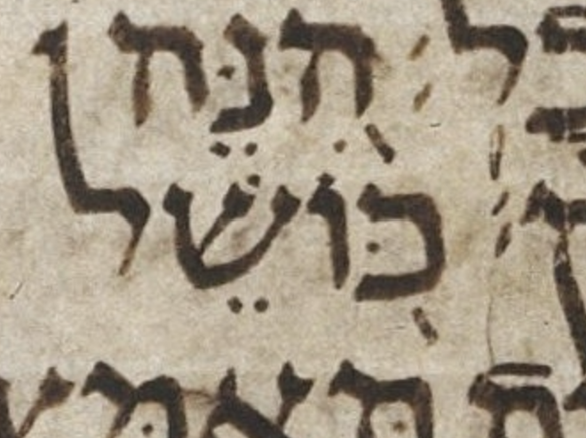
μA (Aleppo) (page 271r, col 1, line 25, word 1):

| אֱל֣וֹהַ אֱל֣וֹהַּ |
# 4:9 | ה lacks מפיק in μL, says BHQ’s reiteration |
This is one of seven similar cases in Job in μL. All are correctly transcribed in BHQ, i.e. transcribed without a מפיק. Although all are correctly transcribed in BHQ, they are noted to different extents in BHQ. Six of these seven, including this one, are noted in the entry for 4:9 in the BHQ section “Commentary on the Critical Apparatus.” Only this one and 11:6 are noted in the bottom-of-page critical apparatus as well. The one in 4:17 is not noted in any way in BHQ. — U — M — μL 398A col. 1 line -2 (2 counting from bottom of column)
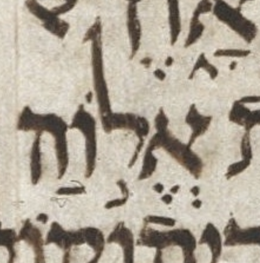
μA (Aleppo) (page 271r, col 2, line 2, word 2):

| מֵאֱל֣וֹהַ מֵאֱל֣וֹהַּ |
# 4:17 | ה lacks מפיק in μL, says BHQ’s implication |
This is one of seven similar cases in Job in μL. All are correctly transcribed in BHQ, i.e. transcribed without a מפיק. Although all are correctly transcribed in BHQ, they are noted to different extents in BHQ. This is the only one of these seven not noted in any way in BHQ. For more details, see my entry on 4:9. — U — M — μL 398A col. 2 line 10
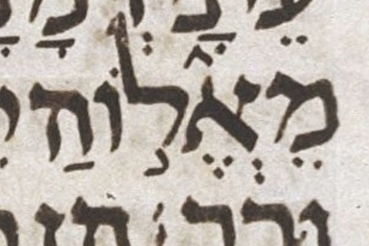
μA (Aleppo) (page 271r, col 2, line 11, word 4):

| מִצִּנִּ֥ים מִצִנִּ֥ים |
# 5:5 | צ has דגש in μL, says BHQ’s implication |
There is little or no evidence of a דגש in the צ, and the consensus has no such דגש.
It is said (from direct inspection of μL in Russia) that there is “a pale yellow dot in the [צ] which could be the trace of a worn-off [דגש]” in Viktor Golinets, “Dageš, Mappiq, Specks on Vellum, and Editing of the Codex Leningradensis”, KUSATU 15/2013, p. 242 (2013).
This is interesting to know, since this pale yellow dot is not visible in the color image. All that is present in the color image is a slight smudge between the צ and the נ. This smudge closely resembles other nearby smudges.
Though interesting, this report of a pale yellow dot still falls well under the “little” of my assessment that there is little or no evidence of a דגש here.
The proposed transcription must either be a simple typo or must spring from some source other than the color image of μL or the consensus. Sometimes the black and white images of μL can be misleading, particularly when they are presented with high contrast, i.e. showing little or no “middle ground” of gray tones.
U — M — μL 398A col. 2 line 22

μA (Aleppo) (page 271r, col 2, line 23, word 2):

| בְּ֭רָעָב בְּֽ֭רָעָב |
# 5:20 | ב lacks געיה in μL, says BHQ’s implication |
U — M — μL 398B col. 1 line 13
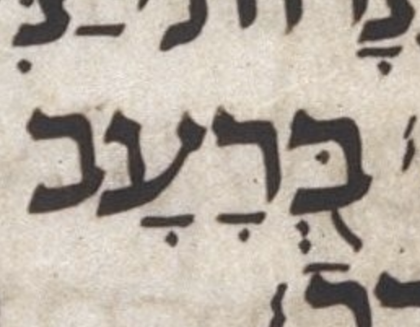
μA (Aleppo) (page 271v, col 1, line 12, word 6):

| הׇשְׁלְמָה־לָֽךְ׃
(?) הׇשְׁלְמָה־לָּֽךְ׃ |
# 5:23 | ל lacks דגש in μL, maybe, says BHQ’s implication |
There is some kind of a dot way over next to the final khaf ( ך ) but it could easily be either not ink, or not intentional ink. Aside: the קמץ under ה is קטן. — U — M — μL 398B col. 1 line 17
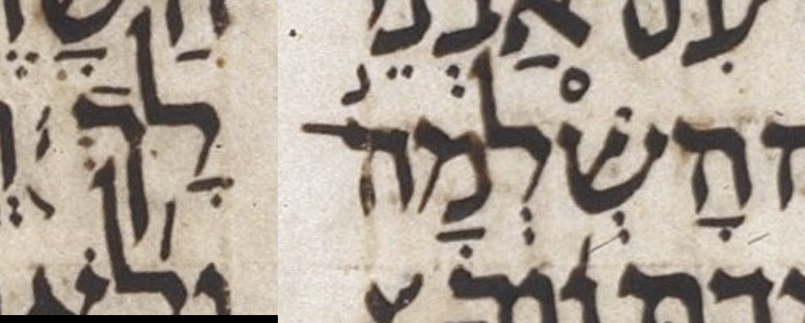
μA (Aleppo) (page 271v, col 1, line 17, word 1):

| נָ֝וְךָ נָ֝וְךָ֗ |
# 5:24 | רביע of רביע מוגרש is absent in μL, says BHQ’s implication |
The dot above the final khaf ( ך ) might at first glance appear to be a candidate for the possibly-expected רביע, but it is almost certainly the קמץ dot belonging to the word-part השלמה־ above, which, coincidentally, is part of our entry for 5:23. — U — M — μL 398B col. 1 line 19
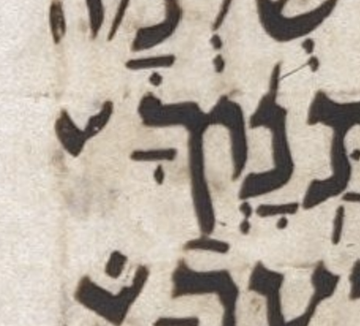
μA (Aleppo) (page 271v, col 1, line 18, word 2):

| וּֽתְהִי
ע֨וֹד׀ וּ֥תְהִי־ע֨וֹד׀ |
# 6:10 | געיה not מרכא-מקף in μL, says BHQ’s implication |
Note that consensus has a rare and hard-to-understand phenomenon called “secondary מרכא” by Breuer.
This is one of only two strictly analogous cases listed here, though there are about 30 analogous cases if one includes those where the analogy is allowed to be less strict. What makes this case “rare among rare” is that, contrary to most cases, the מקף that is normally implicit is explicit (in the consensus). Interestingly, μL has some sort of disturbance where one would expect the מקף, suggesting that there might have been a מקף here that was erased.
See Breuer CoS sections 09.27, 9.37, and 11.06.rn2. (CoS = The Cantillation of Scripture.) (Note that an English translation of CoS is now available, a great boon to students of cantillation who cannot easily read the original in its modern Hebrew.)
The mark under the vav of ותהי was changed from מרכא to געיה in going from BHS to BHQ. This was a regression, in my opinion, since it leaves ותהי with no accent, only געיה. This is an uncharitable transcription.
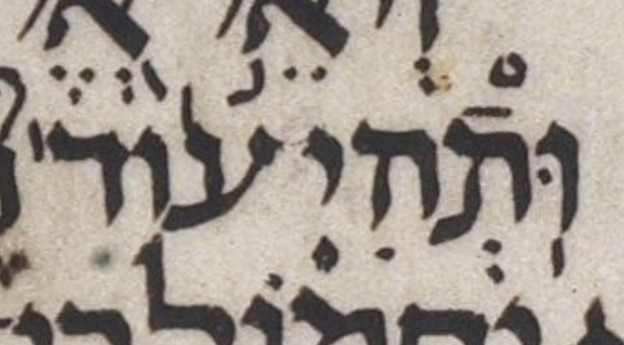
μA (Aleppo) (page 271v, col 2, line 5, word 1):

| בְּ֭עֵת בְּעֵ֣ת |
# 6:17 | דחי not מונח in μL, says BHQ’s implication |
See 34:5. — U — M — μL 398B col. 2 line 15
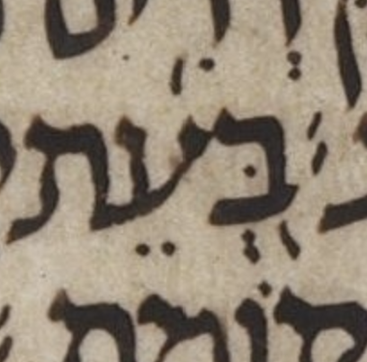
μA (Aleppo) (page 271v, col 2, line 13, word 1):
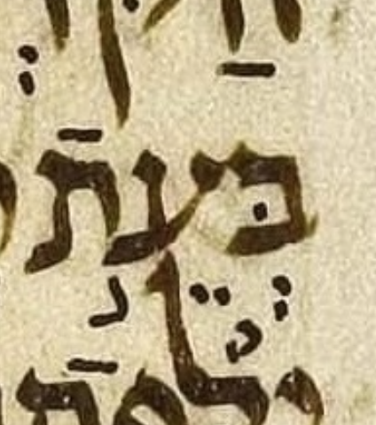
| ל֑וֹ לֹ֑א |
# 6:21 | קרי of לו not לא in
μL, says BHQ’s reiteration |
Consensus has no כתיב/קרי here, or, if you like, לא are the letters of both the כתיב and קרי. So, we could say that the consensus כתיב/קרי is לא/לא and the proposed כתיב/קרי for μL is לא/לו.
Aside: don’t be confused by what might look like an L (ell) open to the southeast, above the א of לא; it is the bar of a קמץ connected to a מרכא, both belonging to the ב of בָּ֥אוּ on the line above.
U — M — μL 398B col. 2 line 20

μA (Aleppo) (page 271v, col 2, line 17, word 6):

| עַל־רֵֽיעֲכֶֽם׃ עַֽל־רֵיעֲכֶֽם׃ |
# 6:27 | געיה on רי not על in
μL, says BHQ’s implication |
U — M — μL 398B col. 2 line 27

μA (Aleppo) (page 271v, col 2, line 25, word 3):

| וְשֽׁוּבוּ וְשׁ֥וּבוּ |
# 6:29 | געיה not מרכא in μL, says BHQ but not WLC |
Contrary to the transcription shown above, the most likely scribal intent was מרכא. — U — M — μL 399A col. 1 line 2

μA (Aleppo) (page 271v, col 2, line 27, word 4):

| וְכִימֵ֖֗י וְכִימֵ֖י |
# 7:1 | רביע fights טרחא in μL, says BHL but not BHQ |
BHQ silently ignores the possible רביע. — U — M — μL 399A col. 1 line 4
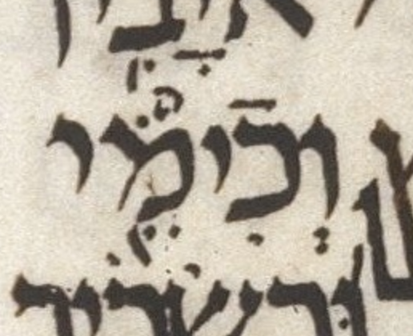
μA (Aleppo) (page 272r, col 1, line 1, word 6):

| יַעֲלֽ͏ֶה׃ יַעֲלֶֽה׃ |
# 7:9 | סילוק precedes סגול in μL, says BHQ’s implication |
U — M — μL 399A col. 1 line 14
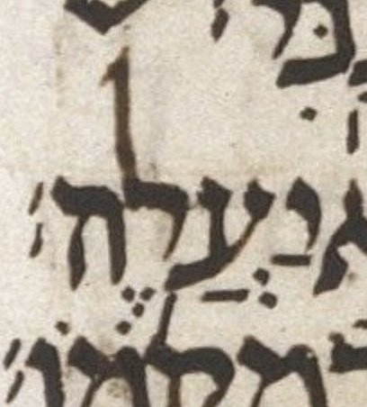
μA (Aleppo) (page 272r, col 1, line 10, word 8):

| הָאָ֫דָ֥ם הָ֫אָדָ֥ם |
# 7:20 | עולה on א not ה in μL, says BHQ’s implication |
An argument could be made that it is μL not μA that represents the consensus here. For example, the Jerusalem Crown edition, despite normally staying quite close to μA, has עולה on א in its body text and only notes in an appendix that μA has עולה on ה. — U — M — μL 399A col. 1 line 27
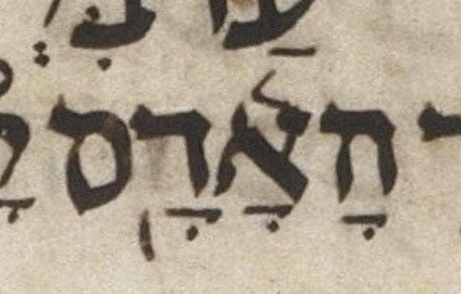
μA (Aleppo) (page 272r, col 1, line 23, word 4):
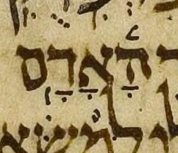
| וְשִׁ֖חֲרְתַּ֣נִי וְשִׁ֖חַרְתַּ֣נִי |
# 7:21 | פתח on ח is חטף in μL, says BHQ’s implication |
It doesn’t make sense to have a חטף vowel (aka a חטף שווא) immediately followed by a simple שווא. Yet, the manuscript image clearly shows this: a חטף פתח (under ח) is immediately followed by a simple שווא (under ר). — U — M — μL 399A col. 2 line 3
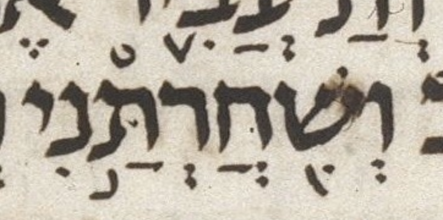
μA (Aleppo) (page 272r, col 1, line 26, word 3):
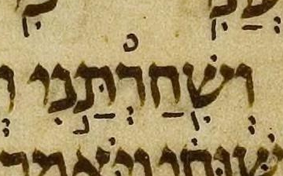
| וַיֹאמַֽר׃ וַיֹּאמַֽר׃ |
# 8:1 | yod lacks דגש in μL, says BHQ’s reiteration |
This quirk is noted in BHQ. — U — M — μL 399A col. 2 line 5 (including 1 blank line in the count)
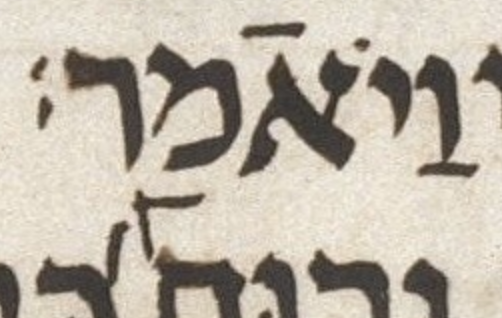
μA (Aleppo) (page 272r, col 1, line 27, word 4):
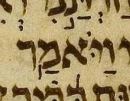
| כַּ֝בִּיר כַּ֝בִּ֗יר |
# 8:2 | רביע of רביע מוגרש is absent in μL, says BHQ’s implication |

μA (Aleppo) (page 272r, col 1, line 28, word 6):
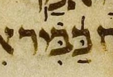
| וְּ֝אַחֲרִיתְךָ֗ וְ֝אַחֲרִֽיתְךָ֗ |
# 8:7 | שורוק dot fights שווא in μL, says BHL but not BHQ |
BHQ silently ignores the possible שורוק dot. — The געיה difference is not important to us here. — U — M — μL 399A col. 2 line 13 (including 1 blank line in the count)

μA (Aleppo) (page 272r, col 2, line 7, word 1):
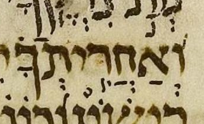
| עַ֝כָּבִישׁ
(?) עַ֝כָּבִ֗ישׁ |
# 8:14 | רביע of רביע מוגרש is absent in μL, maybe, says DM and WLC but not BHQ |
Perhaps a רביע is merged into the left end of the (untranscribed) רפה. — U — M — μL 399A col. 2 line 20

μA (Aleppo) (page 272r, col 2, line 14, word 5):
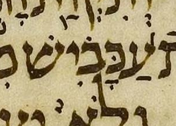
| ה֖וּא ה֭וּא |
# 8:16 | טרחא not דחי in μL, says BHQ but not WLC |
U — M — μL 399A col. 2 line 23

μA (Aleppo) (page 272r, col 2, line 16, word 6):

| יֹ֭נַקְתּ֥וֹ יֹֽנַקְתּ֥וֹ |
# 8:16 | דחי not געיה in μL, says BHQ but not WLC |
Above I have asserted that the consensus has געיה here, but this געיה, like most cases of געיה, is optional. Therefore, one could just as easily assert the consensus has no געיה. I have chosen the consensus to be as close as possible to the proposed transcription of μL. I did this in order to make the proposed transcription seem no weirder than it really is. In other words, it is better to frame this as a question of דחי versus געיה than as a question of דחי versus no mark at all. Note that μA has no געיה here. — U — M — μL 399A col. 2 line -4 (4 counting from bottom of column)

μA (Aleppo) (page 272r, col 2, line 17, word 3):

| יִתְפַלָּצֽוּן׃ יִתְפַּלָּצֽוּן׃ |
# 9:6 | פ lacks דגש in μL, says BHQ’s implication |
There is a bump on the פ that might be a misplaced דגש. — U — M — μL 399B col. 1 line 12 (including 1 blank line in the count)

μA (Aleppo) (page 272v, col 1, line 2, word 2):
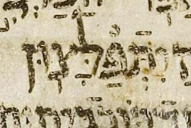
| וְנִפְלָא֗וֹת וְ֝נִפְלָא֗וֹת |
# 9:10 | vav lacks גרש מוקדם in μL, says BHQ but not UXLC |
As UXLC notes, the possible גרש מוקדם appears to be doubled, possibly as the result of a single stroke whose only remains are its edges. — The evidence for this גרש מוקדם is slim, so BHQ’s choice to leave it out is reasonable. Having left it out though, BHQ should have noted its absence, i.e. noted the divergence from consensus. Note that a missing גרש מוקדם is a more serious issue than a missing רביע, because the רביע is, effectively, just a stress helper. In contrast, the גרש מוקדם defines the accent to be, overall, רביע מוגרש. — U — M — μL 399B col. 1 line 16

μA (Aleppo) (page 272v, col 1, line 6, word 1):
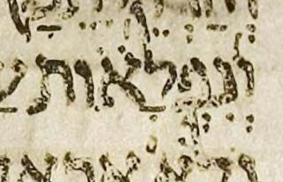
| עִמּוֹ׃ (?) עִמּֽוֹ׃ |
# 9:14 | סילוק is missing in μL, maybe, says BHL but not BHQ |
BHQ silently supplies the סילוק that is the consensus expectation, despite little or no evidence for it in μL. — U — M — μL 399B col. 1 line 22 (including 1 blank line in the count)

μA (Aleppo) (page 272v, col 1, line 11, word 2):
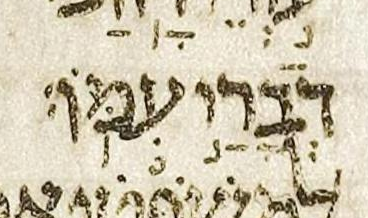
| כַּפָּי׃ (?) כַּפָּֽי׃ |
# 9:30 | סילוק is missing in μL, maybe, says BHL but not BHQ |
BHQ silently supplies the סילוק that is the consensus expectation, despite little or no evidence for it in μL. — U — M — μL 399B col. 2 line 15

μA (Aleppo) (page 272v, col 2, line 1, word 5):
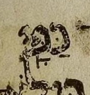
| אַֽ֭דַבְּרָה אֲֽ֭דַבְּרָה |
# 9:35 | פתח on א is not חטף in μL, says BHQ’s implication |
As DM footnote 20 mentions, this is one of three such cases, the other two being 27:9 and 34:33. In all three cases, the consensus has געיה on an initial vocal שווא notated as a חטף פתח. In μL, the געיה is on an initial פתח, a full (albeit short) syllable rather than a שווא. — U — M — μL 399B col. 2 line -8 (8 counting from bottom of column)

μA (Aleppo) (page 272v, col 2, line 5, word 4):
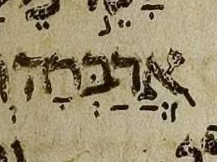
| אֲ֝דַבְּרָה֗ אֲ֝דַבְּרָ֗ה |
# 10:1 | רביע on ה not ר in μL, says BHQ’s implication |
U — M — μL 399B col. 2 line -6 (6 counting from bottom of column)

μA (Aleppo) (page 272v, col 2, line 7, word 4):
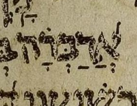
| וּ֭לְחַטָּאתִ֥י וּֽלְחַטָּאתִ֥י |
# 10:6 | דחי not געיה in μL, says BHQ but not UXLC |
Whereas usually we just baldly and boldly state what (we think) the consensus is, here we will try to explain why the transcription’s divergence from consensus seems so unlikely to reflect the scribal intent.
In BHS, a דחי followed by מרכא is probably found only here and in the following three cases: Ps 86:7 צָ֭רָתִ֥י, Ps 118:5 הַ֭מֵּצַ֥ר, and Ps 139:7 אָ֭נָ֥ה. In those three cases, there is little question about the דחי: the question is only whether the second mark is מרכא or געיה. (In the Ps 118:5 הַ֭מֵּצַ֥ר case, there is also a question of whether there should be a second mark at all.)
In contrast, here in 10:6 the דחי is highly questionable because it follows an אתנח, a sequence unprecedented in the consensus and rare even in BHS, where it is probably found in only two other cases: Ps 115:3 כֹּ֭ל אֲשֶׁר־חָפֵ֣ץ עָשָֽׂה׃ and Ps 119:16 לֹ֭א אֶשְׁכַּ֣ח דְּבָרֶֽךָ׃. In both of those two cases, טרחא is a better transcription of μL.
After אתנח, the consensus sequence here in 10:6 is מרכא and then סילוק: וּֽלְחַטָּאתִ֥י תִדְרֽוֹשׁ׃. After אתנח, this sequence is found about 194 times in poetic verses, about 38 of which are in Job, e.g. 6:12 אִֽם־בְּשָׂרִ֥י נָחֽוּשׁ׃, 7:14 וּֽמֵחֶזְיֹנ֥וֹת תְּבַעֲתַֽנִּי׃, and 8:11 יִשְׂגֶּה־אָ֥חוּ בְלִי־מָֽיִם׃.
This mark was probably transcribed as a דחי ignoring context, using only the mark’s position relative to its letter (early) and its inclination (twisted somewhat counterclockwise from vertical). Although in an ideal world we could transcribe using only such criteria, in practice we must transcribe more charitably, considering context as well. The relevant context includes both the consensus pointing and the likelihood of the non-consensus (quirky) pointing under consideration. Here, a transcription of געיה seems best given that the consensus is געיה and דחי seems very unlikely.

μA (Aleppo) (page 272v, col 2, line 13, word 4):
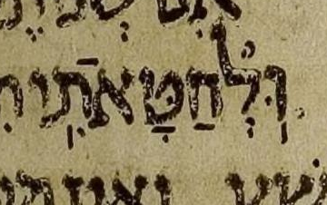
| עׇנְיֽ͏ִי׃ עׇנְיִֽי׃ |
# 10:15 | סילוק precedes חיריק in μL, says BHQ’s implication |
Aside: the קמץ under ע is קטן. — U — M — μL 400A col. 1 line 14

μA (Aleppo) (page 272v, col 2, line 23, word 6):

| יַחֲרִ֑ישׁו יַחֲרִ֑ישׁוּ |
# 11:3 | שורוק dot is absent in μL, says BHQ’s implication |
U — M — μL 400A col. 1 line -1 (1 counting from bottom of column)

μA (Aleppo) (page 273r, col 1, line 6, word 3):
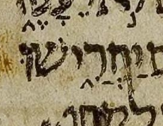
| אֱ֝ל֗וֹהַ אֱ֝ל֗וֹהַּ |
# 11:6 | ה lacks מפיק in μL, says BHQ’s reiteration |
This is one of seven similar cases in Job in μL. All are correctly transcribed in BHQ, i.e. transcribed without a מפיק. Although all are correctly transcribed in BHQ, they are noted to different extents in BHQ. 4:9 discusses the matter at greater length. — U — M — μL 400A col. 2 line 5

μA (Aleppo) (page 273r, col 1, line 10, word 5):
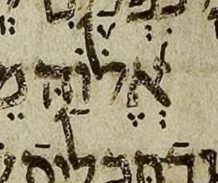
| אֱל֣וֹהַ אֱל֣וֹהַּ |
# 11:7 | ה lacks מפיק in μL, says BHQ’s implication |
This is one of seven similar cases in Job in μL. All are correctly transcribed in BHQ, i.e. transcribed without a מפיק. Although all are correctly transcribed in BHQ, they are noted to different extents in BHQ. 4:9 discusses the matter at greater length. — U — M — μL 400A col. 2 line 6

μA (Aleppo) (page 273r, col 1, line 11, word 2):
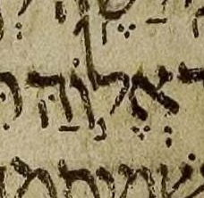
| אַ֭תָּ֗ה אַ֭תָּה |
# 11:13 | רביע on ת fights דחי in μL, says BHQ’s implication |
U — M — μL 400A col. 2 line 13

μA (Aleppo) (page 273r, col 1, line 17, word 2):
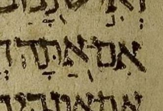
| וְאֶת וְאֶת־ |
# 12:3 | מקף is absent in μL, says BHL and DM but not BHQ |
BHQ silently supplies the מקף that is the consensus expectation, despite no evidence for it in μL. — U — M — μL 400A col. 2 line -1 (1 counting from bottom of column)

μA (Aleppo) (page 273r, col 2, line 1, word 1):
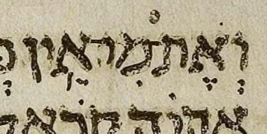
| יַד־יְ֝הוָה יַד־יְ֝הֹוָ֗ה |
# 12:9 | רביע of רביע מוגרש is absent in μL, says BHQ’s implication |
The חולם חסר dot’s absence from μL is not important to us here. — U — M — μL 400B col. 1 line 9

μA (Aleppo) (page 273r, col 2, line 9, word 2):
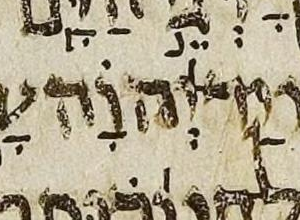
| וְתֽוּשִׁיָּ֑ה
(?) וְתוּשִׁיָּ֑ה |
# 12:16 | ת has געיה in μL, maybe, says BHQ’s implication |
There is a blob of ink below the ת. Most likely, this mark is a malformed masorah circle on the word מוליך on the line below. — BHQ seems to transcribe the blob of ink as both a געיה on ת and a masorah circle on מוליך. BHS did not have this געיה; I wish BHQ had left well enough alone. — U — M — μL 400B col. 1 line -11 (11 counting from bottom of column)

μA (Aleppo) (page 273r, col 2, line 16, word 6):
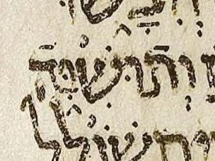
| וְאֵֽתָנִ֣ים וְאֵ֖תָנִ֣ים |
# 12:19 | געיה not טרחא in μL, says BHQ but not UXLC |
U — M — μL 400B col. 1 line 20

μA (Aleppo) (page 273r, col 2, line 20, word 1):
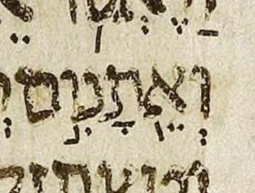
| מֵרֵ֣יַּח מֵרֵ֣יחַ |
# 14:9 | yod has דגש and pulls back פתח in μL, says BHL but not BHQ |
The possible דגש looks slightly different than the four nearby dots in the two צירה vowels. This raises the possibility that it is not ink, e.g. a speck on the vellum.
Note that almost by necessity, if we transcribe the yod as having a דגש, then the פתח must be “pulled back” from being a furtive פתח to being a normal פתח that belongs to the yod. This is because, unlike most additions of דגש, here adding a דגש transforms the letter from being silent (an אם קריאה) to being (implicitly) doubled (geminated)! If we give the yod a דגש but do not pull back the פתח to the yod, we are proposing a pointing that goes beyond surprising to nonsensical. To do so would be unreasonably uncharitable.
Although the position of the פתח (between yod and ח) may seem to support the idea that the פתח belongs to the yod, this is actually a common position for a furtive פתח. See, for example, the image we provide of אלוה in 4:9 and 11:6. So, the position of the פתח is actually more consistent with the פתח belonging to the ח. (Or, if you prefer to think of furtive פתח in a different way, it belongs to the ר (being the second of two vowels belonging to the ר.)
BHQ silently ignores the possible דגש. Since BHQ does not note any uncertainty in its transcription here (or anywhere), it is hard to distinguish whether BHQ has ignored the mark in question on purpose or by accident.
U — M — μL 401A col. 1 line -9 (9 counting from bottom of column)

μA (Aleppo) (page 273v, col 2, line 11, word 4):
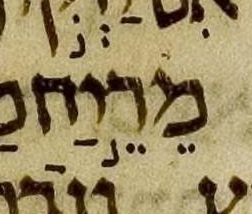
| תָּ֤שִׁ֥ית
(?) תָּ֤שִֽׁית |
# 14:13 | מרכא not געיה in μL, maybe, says WLC but not BHQ |
I find WLC’s transcription far-fetched. Note that the consensus has a rare and hard-to-understand phenomenon called “secondary מהפך” by Breuer. It may seem weird that in the consensus, געיה immediately follows the מהפך, but this is actually expected (or at least “allowed”) if the מהפך is secondary, as it is here, according to Breuer.
The consensus word תָּ֤שִֽׁית may be easier to understand if one considers it and לִ֖י (the next word) to form a compound word whose מקף is, somewhat inexplicably, left implicit. If the מקף were made explicit, the compound would be written as תָּ֤שִֽׁית־לִ֖י and indeed that is the way that word is written (albeit with the מקף colored gray) in some editions of MAM (מקרא על פי המסורה). This and a handful of analogous cases are listed here, with the implicit מקף represented as a tilde (~).
See Breuer CoS sections 11.66.rn1 and 11.79. (CoS = The Cantillation of Scripture; rn = Roman numeral.) (Note that an English translation of CoS is now available, a great boon to students of cantillation who cannot easily read the original in its modern Hebrew.)
In my opinion, BHQ benefits from ignoring WLC here, though BHQ likely ignored WLC as a whole rather than considering and rejecting this particular change in WLC relative to BHS.
U — M — μL 401A col. 1 line -3 (3 counting from bottom of column)
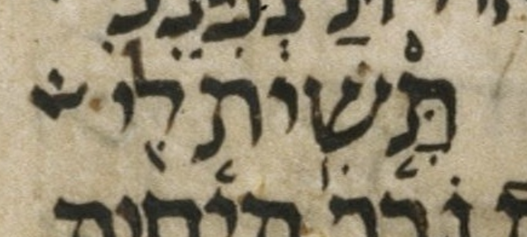
μA (Aleppo) (page 273v, col 2, line 17, word 5):
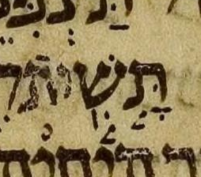
| אֱל֣וֹהַ אֱל֣וֹהַּ |
# 15:8 | ה lacks מפיק in μL, says BHQ’s implication |
This is one of seven similar cases in Job in μL. All are correctly transcribed in BHQ, i.e. transcribed without a מפיק. Although all are correctly transcribed in BHQ, they are noted to different extents in BHQ. 4:9 discusses the matter at greater length. — U — M — μL 401A col. 2 line -7 (7 counting from bottom of column)

μA (Aleppo) (page 274r, col 1, line 9, word 2):
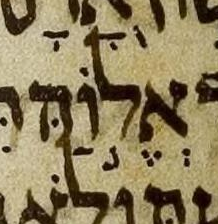
| שֹֽׁ֥חַד׃ שֹֽׁחַד׃ |
# 15:34 | מרכא fights סילוק in μL, says BHL but not BHQ |
BHQ silently ignores the possible מרכא. — U — M — μL 401B col. 1 line -3 (3 counting from bottom of column)

μA (Aleppo) (page 274r, col 2, line 11, word 4):
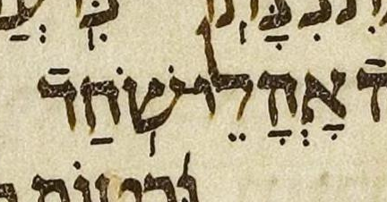
| וְיָלֹ֣ד
(?) וְיָ֣לֹֽד |
# 15:35 | אפס-מונח not מונח-געיה in μL, maybe, says BHQ’s implication |
The proposed transcription of μL above shows nothing (אפס (zero)) on yod and מונח on ל. (By “nothing” on yod I mean nothing other than קמץ.) In contrast, the consensus transcription shows מונח on yod and געיה on ל. (The געיה on ל is extraordinary since it follows the accent (מונח).) The proposed transcription seems far-fetched because there is little evidence of a מונח in any location on this word. There is a mark that looks like a פתח between the yod and the ל, but that is grammatically implausible. — U — M — μL 401B col. 1 line -3 (3 counting from bottom of column)
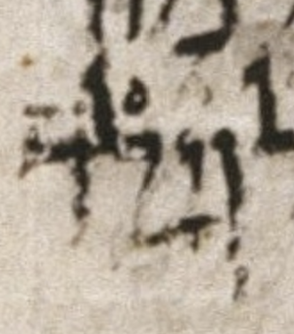
μA (Aleppo) (page 274r, col 2, line 12, word 1):
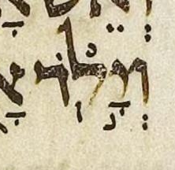
| ל֤וּ־ ל֤וּ |
# 16:4 | מקף is present in μL, says BHQ’s implication |
Though it is not relevant to the point at hand, which is the presence of a מקף, note that in μL, the shape we take to be מחפך is touching the bottom of the ל. — Though it is not relevant to the point at hand, note that BHQ continues to fail to distinguish between גלגל and אתנח הפוך. — U — M — μL 401B col. 2 line 3

μA (Aleppo) (page 274r, col 2, line 16, word 5):
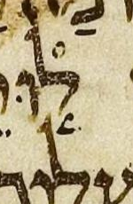
| מַה־מִנִּ֥י מַה־מִּנִּ֥י |
# 16:6 | מ after מח lacks דגש in μL, says BHQ’s implication |
As DM footnote 25 mentions, the omission of דגש after מה־ is common in μL. See 21:15, 34:33, and 35:7. — U — M — μL 401B col. 2 line 7

μA (Aleppo) (page 274r, col 2, line 20, word 3):
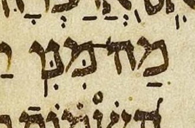
| מְרֵרָֽתִי׃ מְרֵרָתִֽי׃ |
# 16:13 | סילוק on 2nd ר not ת in μL, says BHQ’s implication |
U — M — μL 401B col. 2 line -10 (10 counting from bottom of column)

μA (Aleppo) (page 274v, col 1, line 2, word 3):
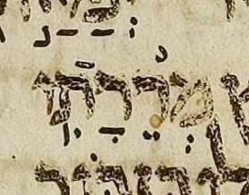
| אֱ֝ל֗וֹהַ אֱ֝ל֗וֹהַּ |
# 16:20 | ה lacks מפיק in μL, says BHQ’s implication |
This is one of seven similar cases in Job in μL. All are correctly transcribed in BHQ, i.e. transcribed without a מפיק. Although all are correctly transcribed in BHQ, they are noted to different extents in BHQ. 4:9 discusses the matter at greater length. — U — M — μL 401B col. 2 line -2 (2 counting from bottom of column)

μA (Aleppo) (page 274v, col 1, line 9, word 4):
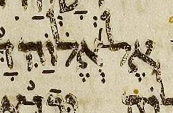
| עַרְבֵ֣נִי עׇרְבֵ֣נִי |
# 17:3 | פתח not קמץ (קטן) in μL, says DM but not BHQ |
This case is the opposite of 3:4, except there the קמץ is not קטן. Some very faint remains of what might have been a “קמץ dot” can perhaps be seen under the horizontal line that is transcribed as a פתח. — U — M — μL 402A col. 1 line 4

μA (Aleppo) (page 274v, col 1, line 14, word 3):
| מִּשָּׂ֑כֶל
(?) מִשָּׂ֑כֶל |
# 17:4 | מ has דגש in μL, maybe, says WLC but not BHQ |
The color image of μL reveals this דגש to be unlikely. Surprisingly, BHL includes this דגש in its body text rather than noting it in BHL-A.
BHQ has no דגש here. I happen to think that this is the best transcription of μL here, but I don’t know whether BHQ arrived at this transcription on purpose or by accident. Did the editors of BHQ consider, but ultimately decide against, the faint possible דגש? Or did they simply ignore μL entirely, supplying the consensus pointing, which has no דגש?
See my entry on נכר in 34:19 for further discussion.

μA (Aleppo) (page 274v, col 1, line 15, word 4):
| וְתֹ֖פֶתּ וְתֹ֖פֶת |
# 17:6 | final ת has דגש in μL, says BHQ’s contribution |
A דגש in a final ת doesn’t make sense without a קמץ or a שווא נח below. But the dot is convincing. — U — M — μL 402A col. 1 line 7
μA (Aleppo) (page 274v, col 1, line 17, word 4):
| לְבָבִּֽי׃ לְבָבִֽי׃ |
# 17:11 | second ב has דגש in μL, says BHQ’s contribution |
U — M — μL 402A col. 1 line 13
μA (Aleppo) (page 274v, col 1, line 22, word 8):
| הֲ֭לְמַּעַנְךָ הַֽ֭לְמַעַנְךָ |
# 18:4 | פתח on ה is חטף in μL, says BHL and DM but not BHQ |
BHQ: הַ֭לְמַּעַנְךָ
The quirk that מ has דגש is discussed in a separate entry of mine. — BHQ silently ignores the possible שווא part of the possible חטף פתח. It also silently ignores the possible interpretation of that ink as a געיה. I.e. other than the prepositive דחי accent, BHQ supplies only the (full) פתח that is the consensus expectation here. BHQ does so silently, i.e. with no note about the pointing of ה. — The געיה difference is not important to us here. — U — M — μL 402A col. 1 line -4 (4 counting from bottom of column)
μA (Aleppo) (page 274v, col 2, line 3, word 4):

| הֲ֭לְמַּעַנְךָ הַֽ֭לְמַעַנְךָ |
# 18:4 | מ has דגש in μL, says BHQ’s reiteration |
BHQ: הַ֭לְמַּעַנְךָ
The quirk that the פתח on ה is חטף is discussed in a separate entry of mine. — BHQ notes that the דגש on the מ in μL disagrees with μA and μY. BHQ misses the געיה in μA. This געיה is irrelevant to BHQ’s point here, which is about the דגש. Still, it would have been nice if BHQ had transcribed μA’s געיה. — The געיה difference is not important to us here. — U — M — μL 402A col. 1 line -4 (4 counting from bottom of column)

μA (Aleppo) (page 274v, col 2, line 3, word 4):

| א֖וֹר א֭וֹר |
# 18:6 | טרחא not דחי in μL, says BHQ’s implication |
The scribe of μL probably intended a דחי but placed it like a טרחא. — BHQ positions the mark ambiguously. The mark is a little to the right of center. So it is not centered, as one would expect a טרחא to be, but neither is it as far to the right as דחי normally is in BHQ. — U — M — μL 402A col. 1 line -2 (2 counting from bottom of column)

μA (Aleppo) (page 274v, col 2, line 5, word 6):
| בְּעָּקֵ֣ב
(?) בְּעָקֵ֣ב |
# 18:9 | ע has דגש in μL, maybe, says BHQ’s contribution |
A דגש in a ע doesn’t make sense. But the dot is convincing, despite being a little close to the right arm of the ע. — BHQ notes this possibility, whereas this is not noted in the other editions under consideration. It could be the editors of those other editions did not catch this, or it could be that they caught it but considered it to be too slight a possibility to note it. — U — M — μL 402A col. 2 line 2
μA (Aleppo) (page 274v, col 2, line 8, word 5):
| וּֽתְדַכְּאוּנַ֥נִי וּֽתְדַכּאוּנַ֥נִי |
# 19:2 | כ has שווא in μL, says BHQ but not UXLC |
As UXLC notes, an erasure under the כ is apparent. — U — M — μL 402A col. 2 line 19

μA (Aleppo) (page 274v, col 2, line 24, word 5):
| חֶרְפָּתִּֽֿי׃
(?) חֶרְפָּתִֽי׃ |
# 19:5 | דגש fights רפה in μL, maybe, says BHL and WLC but not BHQ |
A דגש on a letter with רפה doesn’t make sense. The color image of μL reveals this דגש to be unlikely. It is judged to be just a speck, not a דגש, in Viktor Golinets, “Dageš, Mappiq, Specks on Vellum, and Editing of the Codex Leningradensis”, KUSATU 15/2013, p. 251 (2013). See 24:16.
BHQ drops the note that BHS has on this quirk. Usually BHQ preserves notes that BHS has on quirks. As usual, we don’t know whether BHQ dropped this note on purpose or by accident.
BHQ silently lets the faint possible דגש “win” over the clear רפה in μL. In my opinion, BHQ should have transcribed either both marks (דגש and רפה) or neither. Thus I consider BHQ to have not accurately transcribed μL here. Also, BHQ should have had a note.
U — M — μL 402A col. 2 line -5 (5 counting from bottom of column)

μA (Aleppo) (page 274v, col 2, line 27, word 7):
| קָּ֭רָאתִי
(?) קָ֭רָאתִי |
# 19:16 | ק has דגש in μL, maybe, says BHQ’s reiteration |
The dot is suspiciously brown rather than black. — BHQ notes that the דגש on the ק in μL disagrees with μA and μY. — U — M — μL 402B col. 1 line 8

μA (Aleppo) (page 275r, col 1, line 11, word 4):
| בְּ֝מוֹ־פִ֗י בְּמוֹ־פִ֝֗י |
# 19:16 | רביע מוגרש spans מקף in μA, says DM |
μL omits the רביע of רביע מוגרש, which is expected, since μL’s habit is to omit the רביע in cases like this, where the רביע and the גרש מוקדם would be cramped together on the same letter. So, while μL doesn’t literally match the consensus we have presented, we can say that it implies that consensus, that consensus being merely the explicit notation of what μL implies.
In μL, there is some extra ink on the right side of the גרש מוקדם, which could, perhaps, be a misplaced רביע, but I find this unlikely.

μA (Aleppo) (page 275r, col 1, line 12, word 2):

| תֹ֖אמְרוּ תֹ֭אמְרוּ |
# 19:28 | טרחא not דחי in μL, says BHQ but not WLC |
U — M — μL 402B col. 1 line 23
μA (Aleppo) (page 275r, col 1, line 24, word 5):
| הַנַּֽעֲמָתִ֗י הַֽנַּעֲמָתִ֗י |
# 20:1 | געיה on נ not ה in μL, says BHQ’s implication |
U — M — μL 402B col. 1 line 28

μA (Aleppo) (page 275r, col 1, line 27, word 3):

| בּ֖וֹ בּ֭וֹ |
# 20:23 | טרחא not דחי in μL, says BHQ but not WLC |
U — M — μL 402B col. 2 line 26
μA (Aleppo) (page 275r, col 2, line 23, word 5):
| מַ֣דּוּעַ מַ֭דּוּעַ |
# 21:7 | מונח not דחי in μL, says BHQ’s implication |
U — M — μL 403A col. 1 line 16 (including 1 blank line in the count)

μA (Aleppo) (page 275v, col 1, line 10, word 4):
| מַה־שַׁדַּ֥י מַה־שַּׁדַּ֥י |
# 21:15 | ש lacks דגש in μL, says BHQ’s implication |
As DM footnote 25 mentions, the omission of דגש after מה־ is common in μL. See 16:6, 34:33, and 35:7. Aside: μA lacks the מקף. — U — M — μL 403A col. 1 line 26
μA (Aleppo) (page 275v, col 1, line 20, word 1):
| וִלֹֽא־ וְלֹֽא־ |
# 21:25 | חיריק not שווא in μL, says BHL but not BHQ |
The dot is suspiciously brown rather than black, making me wonder whether the vav was pointed at all. — BHQ silently supplies the שווא that is the consensus expectation, despite little or no evidence for it in μL. — U — M — μL 403A col. 2 line 13

μA (Aleppo) (page 275v, col 2, line 3, word 5):
| וּ֝תְשֽׁוּבֹתֵיכֶ֗ם וּ֝תְשׁ֥וּבֹתֵיכֶ֗ם |
# 21:34 | געיה not מרכא in μL, says BHQ but not UXLC |
U — M — μL 403A col. 2 line 24

μA (Aleppo) (page 275v, col 2, line 14, word 4):
| וִֽ֝יבַהֶלְךָ וִ֝יבַהֶלְךָ֗ |
# 22:10 | רביע of רביע מוגרש is absent in μL, says BHQ’s implication |
Aside: in μL, the געיה (under vav) has either survived much better than the other pointing of this word, been carefully re-inked (unlikely: the re-inking is rarely careful), or been added during re-inking (most likely). — The געיה difference is not important to us here. — U — M — μL 403B col. 1 line 10
μA (Aleppo) (page 275v, col 2, line 25, word 2):
| רֹ֭אשׁ רֹ֖אשׁ |
# 22:12 | דחי not טרחא in μL, says BHQ but not WLC |
The transcription differs from the consensus in way opposite to most such reports here: here we see a דחי versus טרחא difference, with BHQ having דחי, whereas most such reports involving these two accents involve a טרחא versus דחי difference, with BHQ having טרחא. — U — M — μL 403B col. 1 line 12
μA (Aleppo) (page 275v, col 2, line 27, word 6):
| ל֖וֹ ל֭וֹ |
# 22:14 | טרחא not דחי in μL, says BHQ but not WLC |
U — M — μL 403B col. 1 line 14

μA (Aleppo) (page 276r, col 1, line 1, word 6):
| עִמּ֑וֹ (?) עִמּ֣וֹ |
# 22:21 | אתנח not מונח in μL, maybe, says BHQ’s implication |
A dot under the מ of עמו is fairly clear. It is (charitably) not transcribed by BHL-A, presumably based on the consensus expectation that it is absent. — BHQ fails to note that the אתנח it transcribes on עמו disagrees with μA and μY. — U — M — μL 403B col. 1 line -6 (6 counting from bottom of column)

μA (Aleppo) (page 276r, col 1, line 10, word 3):

μY (Cambridge 1753) (note that instead of a masorah circle, μY uses a pair of above-dots as a “callout” for a Masorah parva note; hence the pair of above-dots above ל in ושלם.):

| וּשְׁלם וּשְׁלָ֑ם |
# 22:21 | ל lacks קמץ-אתנח in μL, says BHQ’s reiteration |
Perhaps some very faint remains of an אתנח under ל can be seen. The top dot of the שווא (under the ש) is very faint. See my entry for 22:21 עמי for μA and μY images. — BHQ (charitably) transcribes the top dot of the שווא using, as one often has to, faint evidence bolstered by consensus expectations. BHQ notes (as does BHS) that whereas the ל of ושלם is unpointed in μL, that ל has קמץ and אתנח in μA and μY. — U — M — μL 403B col. 1 line -6 (6 counting from bottom of column)

μA (Aleppo) (page 276r, col 1, line 10, word 4):
| וּבְצ֖וּר וּכְצ֖וּר |
# 22:24 | ב not כ in μL, says BHQ’s implication |
Although my focus is pointing rather than spelling, I am interested in a spelling difference like this, since it is not just a מלא/חסר difference. — BHQ hints at the khaf consensus via note on V (the Vulgate). Nonetheless, perhaps uncharitably, we consider BHQ to not note this quirk. Aside: the שורוק dot and the טרחא had to be transcribed with great charity here, as is often the case in re-inked sections, since often only the letters are re-inked, not the pointing. — U — M — μL 403B col. 1 line 25
μA (Aleppo) (page 276r, col 1, line 14, word 1):
| א֖וֹמֶר אֹ֭מֶר |
# 22:28 | טרחא not דחי in μL, says BHQ’s implication |
The scribe of μL probably intended a דחי but placed it like a טרחא. The מלא/חסר spelling difference is not important to us here.
BHQ places the mark a little left of center. Though this placement is odd, this makes it clear that a טרחא was intended by BHQ rather than a דחי. Thus BHQ somewhat-accurately transcribes the quirk in μL, but should have noted the quirk. Perhaps even better would have been to (charitably) transcribe this as a דחי, and note the quirk. But it is not the editorial policy of BHQ to make such notes: although BHQ is full of charitable transcriptions, as far as I know it never notes its charity.
μA (Aleppo) (page 276r, col 1, line 17, word 5):
| יֽ͏ְמַלֵּ֥ט
(?) יְמַלֵּ֥ט |
# 22:30 | yod has געיה in μL, maybe, says BHQ’s implication |
The possible געיה is before שווא. There is another mark below those marks. It is likely unintentional, and is treated accordingly, i.e. ignored, by all editions I know. — BHQ has the געיה but makes no note as to whether the געיה diverges from consensus. There is no consensus in many cases of געיה, since most cases of געיה are optional. געיה with שווא (whether before or after שווא) occurs often, but further research would be needed to say whether this is a case in which געיה with שווא would be expected (or at least an expected option). — U — M — μL 403B col. 2 line 4

μA (Aleppo) (page 276r, col 1, line 20, word 2):

| וְ֝נִּמְלַ֗ט
(?) וְ֝נִמְלַ֗ט |
# 22:30 | נ has דגש in μL, maybe, says BHQ’s contribution |
The dot in question is suspiciously smaller than nearby ones. — BHQ notes this possibility, whereas this is not noted in the other editions under consideration. It could be the editors of those other editions did not catch this, or it could be that they caught it but considered it to be too slight a possibility to note it. — U — M — μL 403B col. 2 line 4

μA (Aleppo) (page 276r, col 1, line 20, word 5):
| מַה־יֹּֽאמַר־לִֽי׃ מַה־יֹּ֥אמַר לִֽי׃ |
# 23:5 | געיה-מקף not מרכא in μA, says DM |
As is often the case, there is some question as to whether μA has מרכא or געיה, because either are valid in this context. I have shown μA with געיה because that is what DM does and I am primarily reporting DM here.
In an appendix, the כתר ירושלים (Jerusalem Crown) edition disagrees, giving μA a מרכא. This may mean that Breuer changed his mind on this issue over the years. As usual with the כתר ירושלים, it is not clear whether this מרכא reading in the appendix is directly from Breuer or from Ofer.
BHQ transcribes μL as in the consensus shown above, i.e. with יאמר having a מרכא and no מקף. Note that a מרכא only exists in μL if we charitably assume that it is attached to the bottom of the yod. A less charitable transcription would not have this מרכא. Instead, it would interpret those ink (remains) as a long yod or perhaps even a vav.
U — M — μL 403B col. 2 line 11
μA (Aleppo):
| כֹּ֖חַ כֹּ֭חַ |
# 23:6 | טרחא not דחי in μL, says BHQ but not WLC |
U — M — μL 403B col. 2 line 11

μA (Aleppo) (page 276r, col 1, line 26, word 2):
| מִ֭שַׁדַּי מִ֭שַּׁדַּי |
# 24:1 | ש lacks דגש in μL, says UXLC but not BHQ |
The writing is not well preserved here: the letters have been re-inked, but among the points, only the דגש in the ד has been re-inked. So, a דגש in the ש could easily have been lost. But, because other similar words lack דגש in μL (e.g., 27:13, Isaiah 13:6, Joel 1:15), it seems likely that there was never a דגש in the ש to begin with.
This case and that of 27:13 are raised in Viktor Golinets, “Dageš, Mappiq, Specks on Vellum, and Editing of the Codex Leningradensis”, KUSATU 15/2013, p. 242 (2013). 21:15 seems possibly analogous, but not mentioned in Golinets.
Aside: note that the final פתח is charitably transcribed as belonging to the ד rather than the yod.
U — M — μL 403B col. 2 line 25

μA (Aleppo) (page 276r, col 2, line 11, word 6):
| בַּֽמִּדְבָּ֗ר בַּ֥מִּדְבָּ֗ר |
# 24:5 | געיה not מרכא in μL, says BHQ but not UXLC |

μA (Aleppo) (page 276r, col 2, line 16, word 3):
| בְּֽמֹרְדֵ֫י־א֥וֹר בְּֽמֹרְדֵ֫י א֥וֹר |
# 24:13 | מקף is present in μL, says BHQ’s implication |
Gray מקף in MAM. — U — M — μL 404A col. 1 line 11
μA (Aleppo) (page 276r, col 2, line 26, word 1):

| יָ֥דְּֿעוּ
(?) יָ֥דְֿעוּ |
# 24:16 | דגש fights רפה in μL, maybe, says BHQ’s contribution |
I have shown the consensus with רפה to make my point clearer, but a consensus edition would not typically show it. (It would, as usual, merely imply it rather than show it.)
In contrast, I show the רפה on the proposed reading, because I feel it should be shown in any edition that, like BHQ, has דגש. This רפה is important, to highlight the weirdness of the situation. In other words, by showing the רפה on the proposed reading, I am sort of charitably transcribing BHQ.
A דגש on a letter with רפה doesn’t make sense. The dot in question is suspiciously larger than nearby ones, and looks different from them in other ways. See 19:5.
BHQ notes this possibility, whereas this is not noted in the other editions under consideration. It could be the editors of those other editions did not catch this, or it could be that they caught it but considered it to be too slight a possibility to note it.
U — M — μL 404A col. 1 line -12 (12 counting from bottom of column)

μA (Aleppo) (page 276v, col 1, line 3, word 5):

| לֹא־יִ֝פְנֶה לֹא־יִ֝פְנֶ֗ה |
# 24:18 | רביע of רביע מוגרש is absent in μL, says BHQ’s implication |
U — M — μL 404A col. 1 line 19

μA (Aleppo) (page 276v, col 1, line 6, word 2):

| רֹעֵ֣ה (?) רֹעֶ֣ה |
# 24:21 | צירה not סגול in μL, maybe, says BHL and DM but not BHQ |
Perhaps there is some very faint evidence of a third dot that would make a סגול, but this could be just wishful thinking. Note that there is a third dot above the two clearer dots, but I take that to be part of the ע that did not flake off like its neighboring ink did. — BHQ silently supplies the סגול that is the consensus expectation. I.e. despite little or no evidence for it in μL, BHQ silently infers a third dot centered below the two clearer dots. — U — M — μL 404A col. 1 line -6 (6 counting from bottom of column)
μA (Aleppo) (page 276v, col 1, line 10, word 1):

| גְּ֝בוּרוֹתָ֗יו גְּ֝בוּרֹתָ֗יו |
# 26:14 | חולם becomes מלא in קרי in μL, says WLC but not BHQ |
The consensus is that חולם stays חסר in the קרי, i.e. – רתו in the כתיב merely expands to – רתיו in the קרי. In contrast to the consensus, in μL, – רתו in the כתיב expands all the way to – רותיב in the קרי. The marginal קרי note in μL is a little hard to parse until you realize that it is “invaded” from above by the descender of a big dotted ק.
In general I do not cover מלא/חסר differences here, but this one seemed worth noting because it involves a כתיב/קרי difference, and it was called out by a WLC note.
BHS does not catch this quirk in μL: it reflects the consensus rather than μL. BHQ half-fixes the error in BHS: it updates its marginal קרי note to reflect μL rather than the consensus, but it does not correspondingly update its bottom-of-page critical apparatus note. This error is similar to BHQ’s error regarding the μL קרי of ידעתה השחר in 38:12.
U — M — μL 404A col. 2 line -5 (5 counting from bottom of column)
μA (Aleppo):
| חַי חַי־ |
# 27:2 | מקף is absent in μL, says BHL and DM but not BHQ |
Perhaps there was a מקף that was ignored during re-inking, leaving only some very faint evidence of this מקף. In μA, as in μL, evidence of מקף is minimal. By the way, in μL, the evidence for the דחי on the א of the next word is very faint. — BHQ silently supplies the מקף that is the consensus expectation, despite little or no evidence for it in μL. — U — M — μL 404A col. 2 line -2 (2 counting from bottom of column)
μA (Aleppo) (page 276v, col 2, line 11, word 1):

| הַֽ֭צַעֲקָתוֹ הֲֽ֭צַעֲקָתוֹ |
# 27:9 | פתח on ה is not חטף in μL, says BHQ’s implication |
As DM footnote 20 mentions, this is one of three such cases, the other two being 9:35 and 34:33. In all three cases, the consensus has געיה on an initial vocal שווא notated as a חטף פתח. In μL, the געיה is on an initial פתח, a full (albeit short) syllable rather than a שווא. — U — M — μL 404B col. 1 line 7
μA (Aleppo) (page 276v, col 2, line 20, word 1):

| מִשַׁדַּ֥י מִשַּׁדַּ֥י |
# 27:13 | ש lacks דגש in μL, says UXLC but not BHQ |
See 24:1 for discussion of the דגש in ש in שדי. — U — M — μL 404B col. 1 line 12

μA (Aleppo) (page 276v, col 2, line 25, word 6):

| הִדְריכֻ֥הוּ הִדְרִיכ֥וּהוּ |
# 28:8 | ר lacks חיריק in μL, says BHL but not BHQ |
The מלא/חסר spelling difference is not important to us here. — BHQ silently supplies the חיריק that is the consensus expectation, despite no evidence for it in μL. — U — M — μL 404B col. 2 line 5
μA (Aleppo) (page 277r, col 1, line 17, word 2):

| ה֖וּא ה֭וּא |
# 28:24 | טרחא not דחי in μL, says BHQ but not WLC |
U — M — μL 404B col. 2 line 25

μA (Aleppo) (page 277r, col 2, line 8, word 2):

| בַּעֲשׂת֣וֹ בַּעֲשֹׂת֣וֹ |
# 28:26 | ש lacks חולם dot in μL, says BHQ but not WLC |
Contrary to the transcription shown above, the image of μL clearly shows μL to have both a sin dot and a חולם dot. — I don’t think BHQ is really proposing that μL lacks this חולם dot. This is more likely a typo (inherited from BHS) than a deliberate choice. — U — M — μL 404B col. 2 line -1 (1 counting from bottom of column)

μA (Aleppo) (page 277r, col 2, line 10, word 4):

| לְ֝אוֹרוֹ לְ֝אוֹר֗וֹ |
# 29:3 | רביע of רביע מוגרש is absent in μL, says BHQ’s implication |
μA (Aleppo) (page 277r, col 2, line 16, word 5):

| וִֽ֝ישִׁישִׁים וִ֝ישִׁישִׁ֗ים |
# 29:8 | רביע of רביע מוגרש is absent in μL, says BHQ and WLC |
As far as I know, this is the only such case that DM fails to note. (It is the policy of BHL and WLC to merely transcribe such cases, not note them.) — The געיה difference is not important to us here. — U — M — μL 405A col. 1 line 12

μA (Aleppo) (page 277r, col 2, line 22, word 2):

| וְעַ֥ין וְעַ֥יִן |
# 29:11 | yod lacks חיריק in μL, says BHL but not BHQ |
In μA, the חיריק is high up under the yod. — BHQ silently supplies the חיריק that is the consensus expectation, despite no evidence for it in μL. — U — M — μL 405A col. 1 line -12 (12 counting from bottom of column)
μA (Aleppo) (page 277r, col 2, line 25, word 5):

| בִּקְצִירֽ͏ִי׃ בִּקְצִירִֽי׃ |
# 29:19 | סילוק precedes חיריק in μL, says BHQ’s implication |
Probably the ascender of the ל on the line below “forced” the סילוק to be early. — U — M — μL 405A col. 1 line -4 (4 counting from bottom of column)
μA (Aleppo) (page 277v, col 1, line 6, word 7):

| כֹּ֖חַ כֹּ֭חַ |
# 30:18 | טרחא not דחי in μL, says BHQ but not WLC |
U — M — μL 405A col. 2 line 25

μA (Aleppo) (page 277v, col 2, line 7, word 2):

| ר֖וּחַ ר֭וּחַ |
# 30:22 | טרחא not דחי in μL, says BHQ but not WLC |

μA (Aleppo) (page 277v, col 2, line 11, word 6):

| ע֖וֹרִי ע֭וֹרִי |
# 30:30 | טרחא not דחי in μL, says BHQ but not WLC |
U — M — μL 405B col. 1 line 12

μA (Aleppo) (page 277v, col 2, line 21, word 1):

| וּמֶ֤ה׀ וּמֶ֤ה |
# 31:2 | לגרמיה is present in μL, says BHQ’s implication |
An argument could be made that it is μL not μA that represents the consensus here. For example, the Jerusalem Crown edition, despite normally staying quite close to μA, has לגרמיה in its body text and only notes in an appendix that μA has no לגרמיה. See the MAM documentation for this word for a list of where various manuscripts fall on this issue. — U — M — μL 405B col. 1 line 15
μA (Aleppo) (page 277v, col 2, line 24, word 1):

| ה֖וּא ה֭וּא |
# 31:4 | טרחא not דחי in μL, says BHQ but not WLC |
U — M — μL 405B col. 1 line 17

μA (Aleppo) (page 277v, col 2, line 26, word 2):

| רַגְלֽ͏ִי׃ רַגְלִֽי׃ |
# 31:5 | סילוק precedes חיריק in μL, says BHL but not BHQ |
BHQ silently supplies the marks in the vowel-then-accent order that is the consensus expectation, in clear contradiction of μL here. 32:6 is similar. In my opinion BHQ shows itself to be out of date by continuing to aspire, as BHS did, to reflect all such ordering quirks. I think the modern consensus is that these orderings are as meaningless as the variable length of ascenders on ל. Nonetheless, since BHQ still aspires to get these orderings right, it is fair for me to point out when it fails to do so. — U — M — μL 405B col. 1 line -9 (9 counting from bottom of column) (including 1 blank line in the count)
μA (Aleppo) (page 277v, col 2, line 27, word 8):

| מֻאֿוּֽם׃ מֽאֿוּם׃ |
# 31:7 | קובוץ-סילוק not סילוק-אפס in μL, says BHL, DM, and WLC but not BHQ |
BHQ: מֻאֽוּם׃
The consensus has סילוק under מ and nothing (אפס (zero)) under vav.
BHQ reflects neither μL nor the consensus expectation here. It reflects μL except it places the סילוק under the א instead of the vav. This not only contradicts μL, but also makes no sense given the רפה on the א. (Admittedly, the actual location in μL, under the vav, doesn’t make any sense either.)
I would also argue that this particular רפה should have been shown, despite the general policy of BHQ to ignore רפה marks in μL. In such a confusing word, the reader needs all the detail and context possible, such as this רפה mark.
BHQ notes that here μL disagrees with μA and μY. But BHQ gives the מ in μA and μY a מרכא rather than a סילוק, which seems more likely a typo than a deliberate choice.
U — M — μL 405B col. 1 line -6 (6 counting from bottom of column) (including 1 blank line in the count)
μA (Aleppo) (page 278r, col 1, line 2, word 5):

| הֲֽ֝לֹא־בַ֭בֶּטֶן
(?) הֲֽלֹא־בַ֭בֶּטֶן |
# 31:15 | גרש מוקדם fights דחי in μL, maybe, says WLC but not BHQ |
A גרש מוקדם accent doesn’t make sense here, and the color image suggests that the mark is not ink. — BHQ has wisely removed the גרש מוקדם that BHS had here. Unfortunately, as always, BHQ has not documented this change, leaving it as a painful “exercise left to the reader” to discover such changes. — U — M — μL 405B col. 2 line 4
μA (Aleppo) (page 278r, col 1, line 11, word 1):

| א֖וֹבֵד א֭וֹבֵד |
# 31:19 | טרחא not דחי in μL, says BHQ but not WLC |

μA (Aleppo) (page 278r, col 1, line 15, word 3):

| כְּ֝בָשַׂי כְּ֝בָשַׂ֗י |
# 31:20 | רביע of רביע מוגרש is absent in μL, says BHQ’s implication |
U — M — μL 405B col. 2 line 10
μA (Aleppo) (page 278r, col 1, line 17, word 2):

| ה֖וּא ה֭וּא |
# 31:28 | טרחא not דחי in μL, says BHQ but not WLC |
U — M — μL 405B col. 2 line 18

μA (Aleppo) (page 278r, col 1, line 25, word 5):

| עֲוֺֽנִי׃ עֲוֺנִֽי׃ |
# 31:33 | סילוק on vav not נ in μL, says BHQ’s implication |
U — M — μL 405B col. 2 line -3 (3 counting from bottom of column)
μA (Aleppo) (page 278r, col 2, line 4, word 3):

| כֹּ֖חָהּ כֹּ֭חָהּ |
# 31:39 | טרחא not דחי in μL, says BHQ but not WLC |

μA (Aleppo) (page 278r, col 2, line 11, word 2):

| יְשִׁישׁ֑͏ִים יְשִׁישִׁ֑ים |
# 32:6 | אתנח precedes חיריק in μL, says BHL but not BHQ |
BHQ silently supplies the marks in the vowel-then-accent order that is the consensus expectation, in clear contradiction of μL here. 31:5 is similar and discusses the matter at greater length. — U — M — μL 406A col. 1 line -6 (6 counting from bottom of column)
μA (Aleppo) (page 278r, col 2, line 26, word 5):

| דֵּעִ֣י דֵעִ֣י |
# 32:10 | ד has דגש in μL, says BHQ but not UXLC |
There is little or no evidence of a דגש in the ד, and the consensus has no such דגש. — U — M — μL 406A col. 2 line 1

μA (Aleppo) (page 278v, col 1, line 3, word 6):

| הוֹחַ֨לְתִּי הוֹחַ֨לְתִּי׀ |
# 32:11 | לגרמיה is absent in μL, says BHQ’s implication |
As DM footnote 32 mentions, in two cases in Job, μL omits the לגרמיה stroke before a word with געיה and רביע. The other such case is 34:33. In both cases, it looks like there may have been an erasure in between the words, where one would expect a לגרמיה to have been, if one was originally present in μL. — U — M — μL 406A col. 2 line 1
μA (Aleppo) (page 278v, col 1, line 4, word 2):

| אֱ֝ל֗וֹהַ אֱ֝ל֗וֹהַּ |
# 33:12 | ה lacks מפיק in μL, says BHQ’s implication |
This is one of seven similar cases in Job in μL. All are correctly transcribed in BHQ, i.e. transcribed without a מפיק. Although all are correctly transcribed in BHQ, they are noted to different extents in BHQ. 4:9 discusses the matter at greater length. — U — M — μL 406B col. 1 line 2
μA (Aleppo) (page 278v, col 2, line 2, word 1):

| וְ֝חַיָּתוֹ וְ֝חַיָּת֗וֹ |
# 33:28 | רביע of רביע מוגרש is absent in μL, says BHQ’s implication |
Note that above we only show (and are only concerned with) the קרי form. — U — M — μL 406B col. 1 line 24
μA (Aleppo) (page 278v, col 2, line 21, word 5):

| הַֽחַיִּים׃ הַחַיִּֽים׃ |
# 33:30 | סילוק on syllable 1 not 3 in μL, says BHQ’s reiteration |
BHQ notes that here μL disagrees with μA and μY, which have the consensus pointing. — U — M — μL 406B col. 1 line -1 (1 counting from bottom of column)
μA (Aleppo) (page 278v, col 2, line 24, word 5):

| כִּֽי־אָ֭מַר כִּֽי־אָמַ֣ר |
# 34:5 | דחי not מונח in μL, says BHQ’s implication |
See 6:17. — U — M — μL 406B col. 2 line 8
μA (Aleppo) (page 279r, col 1, line 5, word 1):

| אַֽנֲשֵׁ֥י אַ֥נֲשֵׁ֥י |
# 34:10 | געיה not מרכא (on א) in μL, says BHQ but not WLC |
Note that consensus has a rare and hard-to-understand phenomenon called “secondary מרכא” by Breuer. It may seem rather extraordinary to have two מרכא marks on the same word, but this is actually expected (or at least “allowed”).
This is one of about a dozen analogous cases listed here.
See Breuer CoS sections 9.23, 9.24, and 11.20. (CoS = The Cantillation of Scripture.) (Note that an English translation of CoS is now available, a great boon to students of cantillation who cannot easily read the original in its modern Hebrew.)
U — M — μL 406B col. 2 line 14
μA (Aleppo) (page 279r, col 1, line 10, word 5):

| נִּכַּר־ נִכַּר־ |
# 34:19 | נ has דגש in μL, says BHL and DM but not BHQ |
The possible דגש is faint. The adjacent דגש (on כ) and other nearby marks are quite clear, casting suspicion on the legitimacy of this דגש.
BHQ has no דגש here. I happen to think that this is the best transcription of μL here, but I don’t know whether BHQ arrived at this transcription on purpose or by accident. Did the editors of BHQ consider, but ultimately decide against, the faint possible דגש? Or did they simply ignore μL entirely, supplying the consensus pointing, which has no דגש?
Since BHQ does not note any uncertainty in its transcription here, it is hard to distinguish whether BHQ has ignored the mark in question on purpose or by accident.
More broadly, BHQ Job never notes any uncertainty in its transcription of μL. This may mislead many readers. Despite the fact that high-resolution, color images of μL are now widely available, many readers will not engage with those images enough to understand how often there is great uncertainty in transcribing μL. And, even if the reader understands that such uncertainty exists in general, BHQ should, in my opinion, indicate to the reader the specific cases where its transcription is particularly uncertain.
U — M — μL 406B col. 2 line -2 (2 counting from bottom of column)

μA (Aleppo) (page 279r, col 1, line 22, word 7):

| שׁ֖וֹעַ שׁ֭וֹעַ |
# 34:19 | טרחא not דחי in μL, says BHQ but not WLC |
U — M — μL 406B col. 2 line 26

μA (Aleppo) (page 279r, col 1, line 22, word 8):

| חֹ֖שֶׁךְ חֹ֭שֶׁךְ |
# 34:22 | טרחא not דחי in μL, says BHQ but not WLC |

μA (Aleppo) (page 279r, col 1, line 26, word 6):

| הַֽמֵעִמְּךָ֬ הֲֽמֵעִמְּךָ֬ |
# 34:33 | פתח on ה is not חטף in μL, says BHQ’s implication |
As DM footnote 20 mentions, this is one of three such cases, the other two being 9:35 and 27:9. In all three cases, the consensus has געיה on an initial vocal שווא notated as a חטף פתח. In μL, the געיה is on an initial פתח, a full (albeit short) syllable rather than a שווא. — U — M — μL 407A col. 1 line 16

μA (Aleppo) (page 279r, col 2, line 11, word 6):

| יְשַׁלְמֶ֨נָּה׀ יְשַׁלְּמֶ֨נָּה׀ |
# 34:33 | ל lacks דגש in μL, says BHQ’s implication |
U — M — μL 407A col. 1 line 16

μA (Aleppo) (page 279r, col 2, line 11, word 7):

| יְשַׁלְּמֶ֨נָּה יְשַׁלְּמֶ֨נָּה׀ |
# 34:33 | לגרמיה is absent in μL, says BHQ’s implication |
As DM footnote 32 mentions, in two cases in Job, μL omits the לגרמיה stroke before a word with געיה and רביע. The other such case is 32:11. In both cases, it looks like there may have been an erasure in between the words, where one would expect a לגרמיה to have been, if one was originally present in μL. In this case here in 34:33, there is an additional mark after the possible erasure. This mark is hard to interpret. — U — M — μL 407A col. 1 line 18

μA (Aleppo) (page 279r, col 2, line 11, word 7):

| וּֽמַה־יָדַ֥עְתָּ וּֽמַה־יָּדַ֥עְתָּ |
# 34:33 | yod lacks דגש in μL, says BHQ’s implication |
As DM footnote 25 mentions, the omission of דגש after מה־ is common in μL. See 16:6, 21:15, and 35:7. — U — M — μL 407A col. 1 line 18

μA (Aleppo) (page 279r, col 2, line 13, word 1):

| יִסְפּ֑וֹק יִשְׂפּ֑וֹק |
# 34:37 | ס not ש in μL, says BHQ’s implication |
Although my focus is pointing rather than spelling, I am interested in a spelling difference like this, since it is not just a מלא/חסר difference. — U — M — μL 407A col. 1 line 22

μA (Aleppo) (page 279r, col 2, line 18, word 2):

| מַה־מִיָּדְךָ֥ מַה־מִּיָּדְךָ֥ |
# 35:7 | מ after מח lacks דגש in μL, says BHQ’s implication |
As DM footnote 25 mentions, the omission of דגש after מה־ is common in μL. See 16:6, 21:15, and 34:33. — U — M — μL 407A col. 2 line 4

μA (Aleppo) (page 279r, col 2, line 26, word 2):

| תֹ֖אמַר תֹ֭אמַר |
# 35:14 | טרחא not דחי in μL, says BHQ but not WLC |
U — M — μL 407A col. 2 line 12

μA (Aleppo) (page 279v, col 1, line 5, word 3):

| וְֽיַעֲ֫בֹ֥דוּ וְֽיַ֫עֲבֹ֥דוּ |
# 36:11 | עולה is over ע in μL, says DM but not BHQ |
In the middle of a word, the “half-accent” עולה (half of עולה ויורד) should never appear on a letter with a vocal שווא, regardless of whether the שווא is notated as a simple שווא or a חטף vowel. Yet, here is just such an עולה, on the letter ע with a חטף פתח. (Rarely, עולה appears on a letter with a vocal שווא at the beginning of a word. See my document, “Tsinnorit & Oleh on Initial Vocal Shewa” for details.) — U — M — μL 407B col. 1 line 1

μA (Aleppo) (page 279v, col 1, line 20, word 1):

| כִּבְלִי־ בִּבְלִי־ |
# 36:12 | כ not ב in μL, says BHQ’s reiteration |
Although my focus is pointing rather than spelling, I am interested in a spelling difference like this, since it is not just a מלא/חסר difference.
Here BHQ has a typo: it has בִּבְלִ־ rather than בִּבְלִי־ in the word it reports for μA and μY. I.e. it is missing a final yod before the מקף. The same typo appears in the BHQ section “Commentary on the Critical Apparatus.” In addition to the typo, for some reason BHQ reports this word as being the קרי of μY, i.e. MY(qere) rather than just MY. I see no “Masorah dot pair” (μY’s equivalent of a masorah circle) on this word in μY. Nor do I see any קרי note in the margin.

μA (Aleppo) (page 279v, col 1, line 22, word 2):

μY (Cambridge 1753):

| שׁ֖וּעֲךָ שׁ֭וּעֲךָ |
# 36:19 | טרחא not דחי in μL, says BHQ but not WLC |
All but the southeast end of the דחי seems to have flaked off, but luckily left some faint trace behind. To charitably transcribe this word, we must not only transcribe this faint trace but also decline to transcribe the similarly faint blob (an erasure?) right next to it under the ש. — U — M — μL 407B col. 1 line 11

μA (Aleppo) (page 279v, col 2, line 1, word 7):

| סֻכָּֽתֽוֹ׃ סֻכָּתֽוֹ׃ |
# 36:29 | כ has געיה in μL, says BHL but not BHQ |
The color image strongly suggests that the mark in question is not ink. A געיה right next to סילוק like that would be extraordinary, by the way, though no appeal to expectations is needed to dismiss this possible געיה.
BHQ has no געיה here. I happen to think that this is the best transcription of μL here, but I don’t know whether BHQ arrived at this transcription on purpose or by accident. Did the editors of BHQ consider, but ultimately decide against, the faint possible large געיה? Or did they simply ignore μL entirely, supplying the consensus pointing, which has no געיה?
See my entry on נכר in 34:19 for further discussion.
U — M — μL 407B col. 1 line -5 (5 counting from bottom of column)
μA (Aleppo) (page 279v, col 2, line 13, word 4):

| לַשֶּׁ֨לַג׀ לַשֶּׁ֨לֶג׀ |
# 37:6 | 2nd ל has פתח not סגול in μL, says BHQ’s implication |
μA (Aleppo) (page 279v, col 2, line 24, word 6):

| ה֖וֹדִיעֵנוּ ה֭וֹדִיעֵנוּ |
# 37:19 | טרחא not דחי in μL, says BHQ but not WLC |
The pointing of this word must, by necessity, be transcribed with much charity. Nonetheless, the mark in question here is fairly clearly positioned as a דחי not a טרחא, though it is, unfortunately, attached to the right leg of the ה. (At least, it is attached to the right leg of the re-inked ה.) — U — M — μL 407B col. 2 line 23

μA (Aleppo) (page 280r, col 1, line 13, word 1):

| לֹ֥א־ לֹֽא־ |
# 37:19 | מרכא not געיה in μL, says BHQ but not UXLC |
The distinction between the מרכא accent, the געיה mark, and the טרחא accent is a vexing problem. Perhaps in some manuscripts, the angle of these marks can help make this distinction, but μL is not such a manuscript. We can, as usual, lean on consensus for help, although consensus based on manuscript evidence is hard to determine in these cases due to this same problem of angle-reliability mentioned above. Notably, I suspect that μA is more reliable than μL in this regard, but I am not sure. So, in these cases, in determining consensus, we may have to rely more than usual on the evidence of printed editions. We may also have to rely more than usual on context like the grammar of cantillation, to determine which of these marks is most likely in a given situation. Aside: the מקף is very faint. — U — M — μL 407B col. 2 line 24

μA (Aleppo) (page 280r, col 1, line 13, word 5):

| ל֖וֹ ל֭וֹ |
# 37:20 | טרחא not דחי in μL, says BHQ but not WLC |
U — M — μL 407B col. 2 line 24

μA (Aleppo) (page 280r, col 1, line 14, word 2):

| הְֽ֭מִיָּמֶיךָ הֲֽ֭מִיָּמֶיךָ |
# 38:12 | simple שווא not חטף פתח in μL, says BHQ’s reiteration |
39:20 is similar — BHQ notes that here μL disagrees with μA and μY, which have the consensus pointing. — U — M — μL 408A col. 1 line -12 (12 counting from bottom of column)

μA (Aleppo) (page 280r, col 2, line 6, word 5):

| יִדַּ֖עְתָּה
הַשַּׁ֣חַר יִדַּ֖עְתָּ הַשַּׁ֣חַר |
# 38:12 | ה copied not moved in קרי in μL, says WLC but not BHQ |
The consensus is that this is one of those כתיב/קרי cases where the word boundary shifts from being after a ה to before that ה. I.e. ידעתה שחר becomes ידעת השחר. I.e. the ה that is at the end of the first word in the כתיב moves to the start of the second word in the קרי. Similar cases include 2 Samuel 5:2 (the כתיב is הייתה מוציא) and Ezekiel 42:9 (the כתיב is ומתחתה לשכות). In contrast to the consensus, in going from כתיב to קרי, μL can be thought of as having copied the ה to the second word rather than moving it.
Aside: the Jerusalem Crown edition, despite normally staying quite close to μA, found μA’s pointing of the כתיב to be too confusing for its body text, relegating it to an appendix. The question is where on the כתיב letters should we put the פתח that implicitly belongs to the ה of השחר. Both μA and μL put this פתח on the ה of ידעתה. In its body text, the Jerusalem Crown edition puts the פתח on no letter: instead, it floats before the ש of שחר. A vowel mark floating like this before a כתיב word has manuscript precedent. I.e. although the Jerusalem Crown edition is diverging from the manuscript here, it is not diverging from manuscript tradition in general by using this notation. For more on orphan pointing, see my document, “Orphan pointing.”
BHS does not catch this quirk in μL: it reflects the consensus rather than μL. BHQ half-fixes the error in BHS: it updates its marginal קרי note to reflect μL rather than the consensus, but it does not correspondingly update its bottom-of-page critical apparatus note. This is similar to what happened with 26:14.
U — M — μL 408A col. 1 line -11 (11 counting from bottom of column)

μA (Aleppo) (page 280r, col 2, line 7, word 3):

Jerusalem Crown:

| צַלְמָּ֣וֶת צַלְמָ֣וֶת |
# 38:17 | מ has דגש in μL, says BHQ’s contribution |
U — M — μL 408A col. 1 line -5 (5 counting from bottom of column)

μA (Aleppo) (page 280r, col 2, line 12, word 6):

| תָ֝בִין תָ֝בִ֗ין |
# 38:20 | רביע of רביע מוגרש is absent in μL, says DM but not BHQ |
The only mark above the ב is a רפה. — U — M — μL 408A col. 1 line 24

μA (Aleppo) (page 280r, col 2, line 16, word 4):

| שֹׁ֖אָה שֹׁ֭אָה |
# 38:27 | טרחא not דחי in μL, says BHQ but not WLC |

μA (Aleppo) (page 280r, col 2, line 24, word 5):

| שָׁ֝מַיִם שָׁ֝מַ֗יִם |
# 38:29 | רביע of רביע מוגרש is absent in μL, says DM but not BHQ |
Aside: BHQ not only has a רביע (against μL) but also has a printing problem: the גרש מוקדם overlaps the shin dot almost completely. — U — M — μL 408A col. 2 line 9

μA (Aleppo) (page 280r, col 2, line 27, word 6):

| וְ֝יָדַעְתָּ֜ וְ֝יָדַעְתָּ֗ |
# 39:2 | גרש not רביע in μL, says BHL but not BHQ |
The mark in question is very heavy, having a stroke width more typical of a letter-stroke than of a niqqud-stroke. Its clarity suggests it is part of the re-inking. Indeed perhaps it is only part of the re-inking, i.e. perhaps it reflects no mark (or only a much smaller mark) in the original. The mark in question may be two marks, a רביע (expected) overlaid with a גרש (unexpected). Or, it may be only a single mark whose lower end is, for some reason, a blob.
BHQ silently supplies the רביע that is the consensus expectation. It may be interesting to note that BHS had the רביע on ד. Like all changes in BHQ, this change had to be discovered, since changes from 1997 BHS to BHQ are undocumented. It is a painful “exercise left to the reader” to discover such changes. The lack of documentation is a DBG tradition carried over from BHS, which lacks documentation for both its 1977 to 1984 changes and its 1984 to 1997 changes.
U — M — μL 408A col. 2 line -3 (3 counting from bottom of column)
μA (Aleppo) (page 280v, col 1, line 16, word 1):

| מְלֵֽחָה׃ מְלֵחָֽה׃ |
# 39:6 | סילוק on ל not ח in μL, says BHQ’s implication |
μA (Aleppo) (page 280v, col 1, line 20, word 6):

| בּ֖וֹ בּ֭וֹ |
# 39:11 | טרחא not דחי in μL, says BHQ but not WLC |

μA (Aleppo) (page 280v, col 1, line 26, word 2):

| בּ֖וֹ בּ֭וֹ |
# 39:12 | טרחא not דחי in μL, says BHQ but not WLC |

μA (Aleppo) (page 280v, col 1, line 27, word 2):

| אֶ֝בְרָה (?) אֶ֝בְרָ֗ה |
# 39:13 | רביע of רביע מוגרש is absent in μL, maybe, says BHL but not BHQ |
A more charitable interpretation of the image is that the רביע is present but is merged with the masorah circle. (It is fairly clear that a masorah circle is present.) Note that the vertical line above the ר is a סילוק from the line above. — BHQ seems to split the mark(s) in question into a רביע on ר and a masorah circle on ב. This is a reasonable (though somewhat charitable) interpretation of μL, but as is so often the case, BHQ should have noted this quirk. — U — M — μL 408B col. 1 line 11
μA (Aleppo) (page 280v, col 1, line 28, word 5):

| תְּדוּשֶֽׁהָ׃ תְדוּשֶֽׁהָ׃ |
# 39:15 | ת has דגש in μL, says BHQ’s implication |
U — M — μL 408B col. 1 line 14

μA (Aleppo) (page 280v, col 2, line 2, word 7):

| הְֽ֭תַרְעִישֶׁנּוּ הֲֽ֭תַרְעִישֶׁנּוּ |
# 39:20 | simple שווא not חטף פתח in μL, says BHQ’s implication |
The situation with המימיך in 38:12 is similar. — U — M — μL 408B col. 1 line -10 (10 counting from bottom of column)
μA (Aleppo) (page 280v, col 2, line 9, word 2):

| שָׂ֝רִים שָׂ֝רִ֗ים |
# 39:25 | רביע of רביע מוגרש is absent in μL, says BHQ’s implication |
Aside: BHQ’s גרש מוקדם is centered over the ש, as if it were “normal” (prose-system) גרש. — U — M — μL 408B col. 1 line 26

μA (Aleppo) (page 280v, col 2, line 16, word 5):

| גָֽא֣וֹן (?) גָא֣וֹן |
# 40:10 | געיה is present (on ג) in μL, maybe, says BHQ’s implication |
The mark in question could easily be accidental. — U — M — μL 408B col. 2 line -11 (11 counting from bottom of column)
μA (Aleppo) (page 281r, col 1, line 6, word 3):

| ה֖וּא ה֭וּא |
# 40:19 | טרחא not דחי in μL, says BHQ but not WLC |
U — M — μL 408B col. 2 line 27

μA (Aleppo) (page 281r, col 1, line 16, word 1):

| הָ֝עֹשׂוֹ הָ֝עֹשׂ֗וֹ |
# 40:19 | רביע of רביע מוגרש is absent in μL, says DM but not BHQ |
There is a confusing constellation of three dots surrounding the ש in μL, but only one of those dots, a sin dot, belongs to the ש. Working backwards (to the right) from that sin dot, the next dot is a “קמץ dot” belonging to the מ of גרמיו on the line above. The next dot is a חולם חסר dot belonging to the ע. (Or, if you prefer an alternative interpretation of חולם חסר dots in general, the חולם חסר dot belongs to an implicit vav between the ע and ש.) The issue at hand is there is no fourth dot that could be interpreted as a רביע above the ש. — U — M — μL 408B col. 2 line 27

μA (Aleppo) (page 281r, col 1, line 16, word 5):

| לֶֽחֱיוֹ׃ לֶחֱיֽוֹ׃ |
# 40:26 | סילוק on ל not yod in μL, says BHQ’s implication |
μA (Aleppo) (page 281r, col 1, line 25, word 3):

| בּ֖וֹ בּ֭וֹ |
# 40:29 | טרחא not דחי in μL, says BHQ but not WLC |
U — M — μL 409A col. 1 line 11

μA (Aleppo) (page 281r, col 1, line 27, word 5):

| לִבְלִי־חָת׃ לִבְלִי־חָֽת׃ |
# 41:25 | סילוק is absent in μL, says BHL but not BHQ |
BHQ silently supplies the סילוק that is the consensus expectation, despite no evidence for it in μL. — U — M — μL 409A col. 2 line 14
μA (Aleppo) (page 281v, col 1, line 3, word 6):

| וַ֧יֹּסֶף וַיֹּ֧סֶף |
# 42:10 | דרגא belongs to vav not yod in
μL, says BHQ but not UXLC |
In situations like this, it is hard to determine which letter an under-accent belongs to. By “situations like this” I mean two narrow letters (in this case vav and yod) where the first letter has an under-vowel and the second letter does not. In the face of this uncertainty, our default should be to transcribe charitably, i.e., all else equal, lean towards the consensus reading. Aside: note that the פתח marks are problematic in both μL and μA, for different reasons: μL’s is faint and μA’s is broken, looking a bit like a צירה (!). — U — M — μL 409B col. 1 line 10

μA (Aleppo) (page 281v, col 1, line 28, word 1):

| בָנֽוֹת׃ בָּנֽוֹת׃ |
# 42:13 | ב lacks דגש in μL, says BHQ’s contribution |
U — M — μL 409B col. 1 line -9 (9 counting from bottom of column) (including 1 blank line in the count)

μA (Aleppo) (page 281v, col 2, line 9, word 3):

{kind=link}
{kind=link}
{kind=link}
{kind=link}
{kind=link}
{kind=link}
{kind=link}
{kind=link}
{kind=link}
{kind=link}
{kind=link}
{kind=link}
{kind=link}
{kind=link}
{kind=link}
{kind=link}
{kind=link}
{kind=link}
{kind=link}
{kind=link}
{kind=link}
{kind=link}
{kind=link}
{kind=link}
{kind=link}